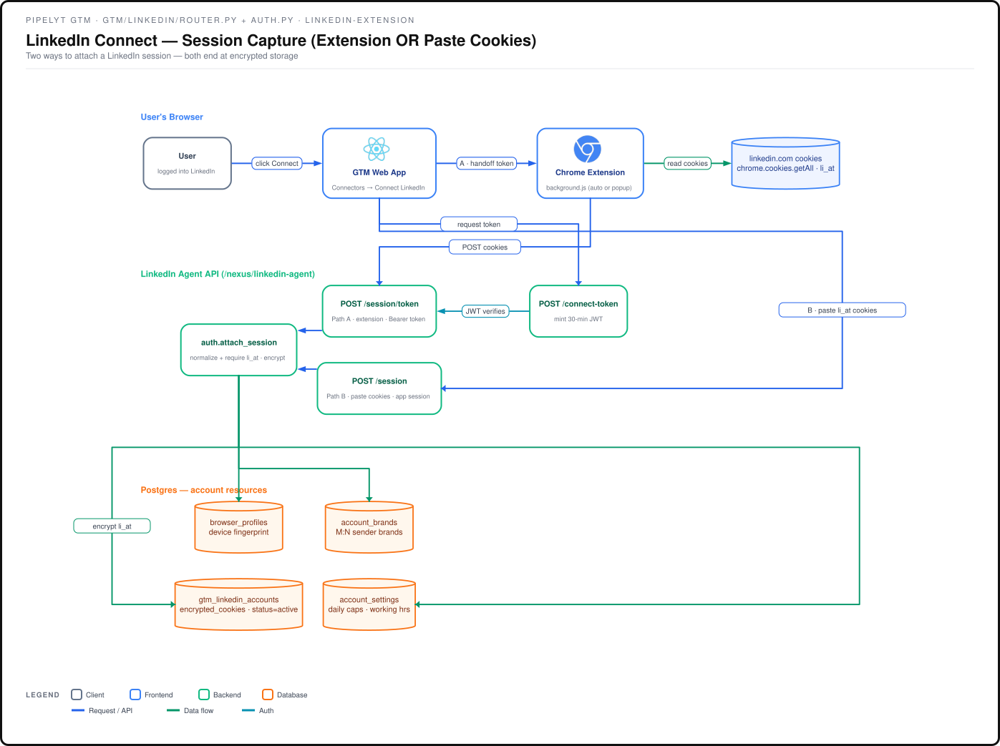
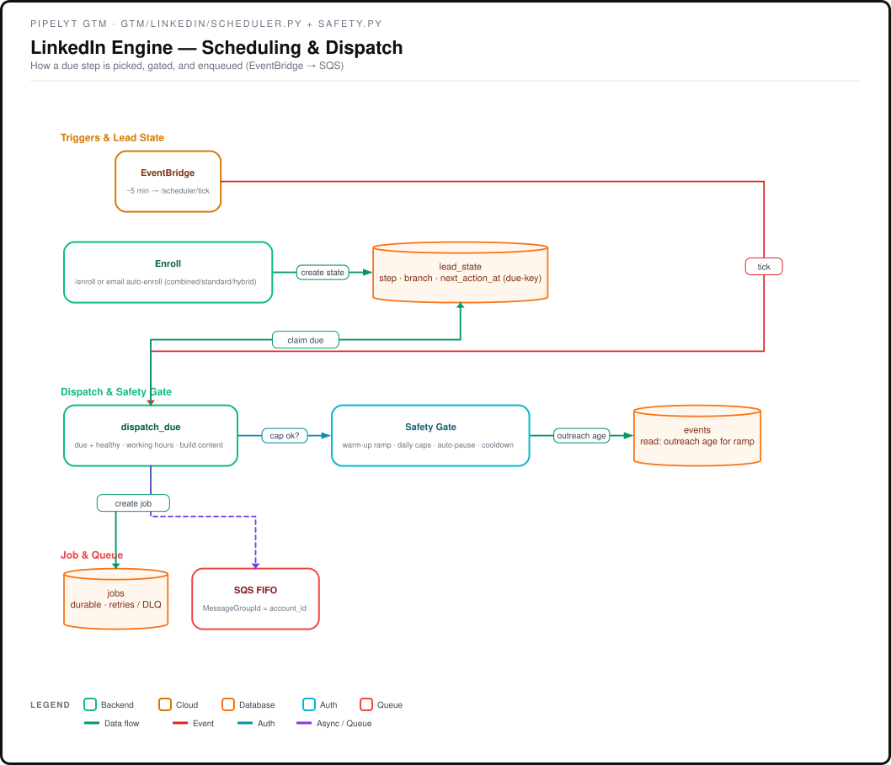
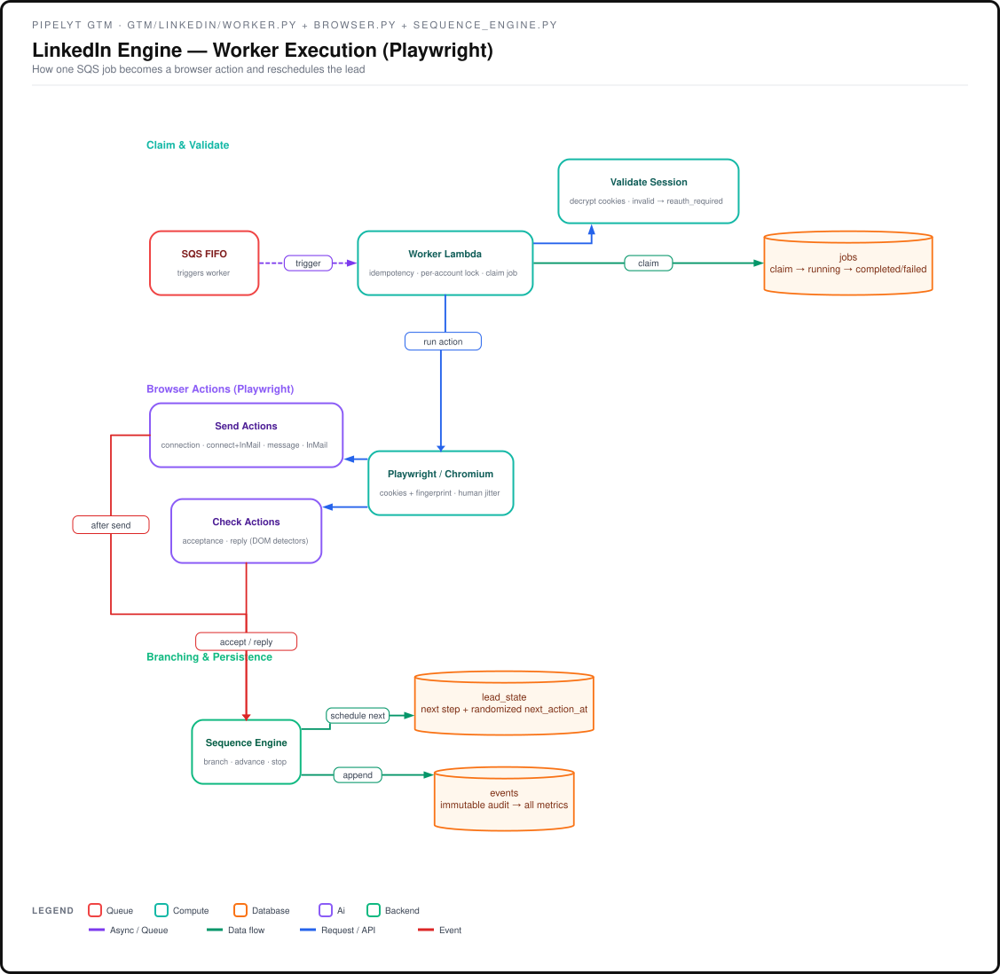
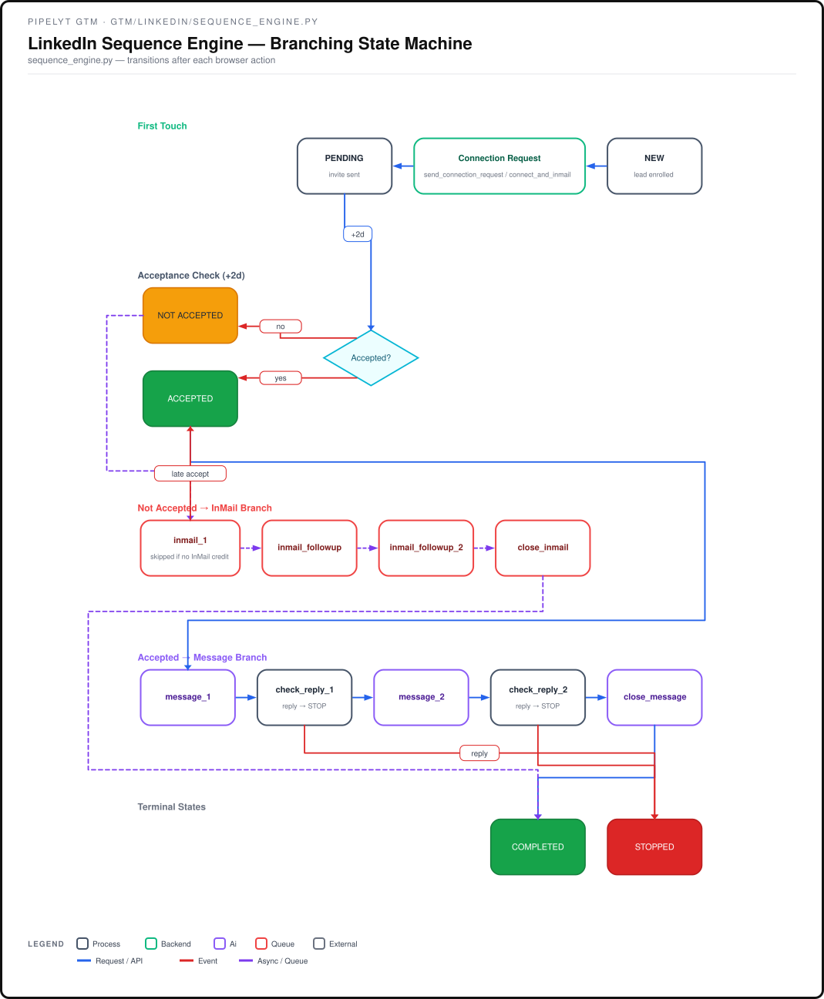

Source: apps/backend/gtm/linkedin/ + apps/linkedin-extension/. Four views of the same system. Feature-flagged by NEXUS_LINKEDIN_ENABLED.
How a user connects a LinkedIn account with no cloud login: the extension reads the user's own cookies and posts them (Bearer connect-token) to be encrypted at rest.

How a due step is picked, gated by the Safety layer (warm-up ramp, daily caps, auto-pause, cooldown), written to a durable job, and published to SQS FIFO.

How one SQS job becomes a browser action (send / check) via Playwright, then updates lead_state + appends an event, closing the loop for the next tick.

Connection request → acceptance check → Message branch (accepted) or InMail branch (not accepted) → COMPLETED / STOPPED, with reply-based global stops and the late-accept branch-cancel.
